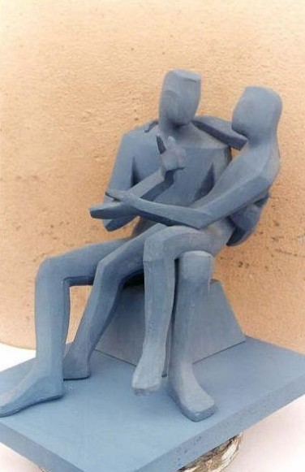
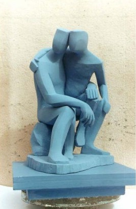
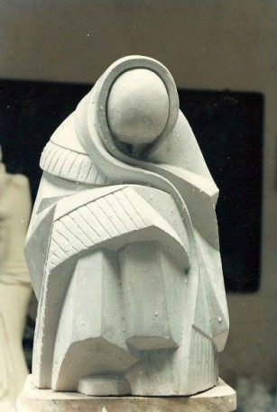
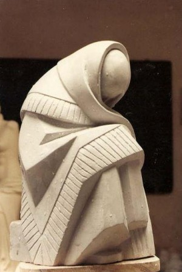
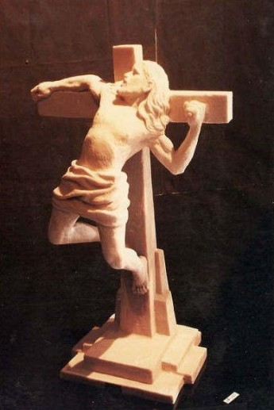
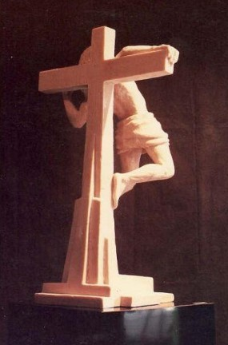

1. Introdução
Este artigo, derivado de monografia de especialização defendida em 2013 na Universidade Anhembi Morumbi, sob orientação da professora Silvia Anspach, investiga a presença da imaginação nas etapas do processo criativo, tomando como caso a produção escultórica de Jorge Luis Vargas Gaitán, artista peruano formado pela Escola Superior de Belas Artes Macedônio de La Torre em Trujillo, radicado em Diadema, São Paulo, onde atua como artista e produtor cultural.
A hipótese que orienta o estudo é a de que a imaginação não se restringe ao impulso inicial da criação. Ela antecede o ato artístico, acompanha sua realização e permanece na obra concluída, conferindo-lhe novos significados. Para examiná-la, o trabalho mobiliza três concepções de imaginação. A imaginação reprodutora da tradição filosófica, sintetizada por Marilena Chauí, serve de contraponto às duas concepções que fundamentam a análise, a imaginação criadora de Gaston Bachelard e a imaginação ativa de Carl Gustav Jung.
Quanto ao método, trata-se de estudo de caso qualitativo, de caráter exploratório, construído a partir de visitas ao ateliê do artista e de conversas realizadas ao longo de 2012 e 2013. As conversas não foram gravadas; os relatos do artista aqui apresentados foram reconstituídos a partir de minhas anotações e de minha memória, razão pela qual aparecem sempre em discurso indireto. Reconhece-se o limite documental dessa escolha, próprio do contexto em que a pesquisa foi realizada, e delimita-se em consequência o alcance das conclusões: os achados valem para o caso estudado e não autorizam generalização. O texto final foi apresentado ao artista, que autorizou sua publicação e confirmou os dados biográficos aqui apresentados.
O artigo se organiza em três partes. A primeira apresenta, em síntese, o instrumental teórico. A segunda analisa três obras do escultor, selecionadas por concentrarem os achados mais significativos da pesquisa. A terceira retoma a hipótese à luz do caso.
2. Três concepções de imaginação
A palavra imaginação carrega uma ambiguidade antiga. No uso comum, ela tanto nomeia a capacidade inventiva que admiramos nos artistas quanto serve de acusação, quando dizemos que algo é pura imaginação, exagero, invencionice. Chauí (2000) observa que essa duplicidade não é acidente do vocabulário, mas herança de uma longa disputa filosófica sobre o que a imaginação é e o que ela vale. Este capítulo percorre três dimensões dessa disputa. A primeira é a concepção da tradição filosófica, que fez da imaginação uma serva da percepção. A segunda é a virada proposta por Gaston Bachelard, que a devolveu ao trabalho criador. A terceira é a formulação de Carl Gustav Jung, que fez dela um caminho para o inconsciente.
2.1 A imaginação reprodutora
Durante séculos, a filosofia tratou a imaginação com desconfiança. Para os empiristas, as imagens mentais eram reflexos das impressões colhidas pelos sentidos, e imaginar não passava de rever, com menos nitidez, aquilo que já se havia percebido. Imagem e lembrança seriam quase a mesma coisa, distinguindo-se apenas pela posição no tempo, uma no presente, outra no passado. Os intelectualistas foram ainda mais severos. Viram na imaginação uma percepção enfraquecida, deformadora da realidade, causadora de ilusões e fonte principal de nossos erros. Por caminhos diferentes, as duas tradições chegaram ao mesmo ponto. Imaginar seria reproduzir. Tanto que, como nota Chauí (2000, p. 166), a tradição costumava usar a palavra imaginação como simples sinônimo de percepção.
Nessa moldura, não há lugar para o novo. A imagem é rastro, vestígio, resíduo do objeto percebido retido na consciência. O imaginado depende sempre do percebido, como a cópia depende do original. É contra essa redução que se levantam as duas concepções que fundamentam este estudo.
2.2 A imaginação criadora de Bachelard
Os estudiosos de Bachelard costumam dividir sua obra em duas vertentes, uma diurna e outra noturna. O Bachelard diurno é o epistemólogo, crítico do racionalismo e do empirismo científico. O noturno é o que interessa aqui, o filósofo do devaneio, da criação artística, da poética. É nessa vertente que ele constrói uma teoria da imaginação em aberto confronto com a tradição.
Para Bachelard, o poeta verdadeiro não se contenta com uma imaginação que apenas evoca o já visto. Ele quer que a imaginação seja uma viagem, um convite ao devaneio dinâmico que põe o ser em movimento e abre uma vida imaginária com leis próprias (BACHELARD, 2001). A imagem, aqui, deixa de ser rastro da percepção para se tornar impulso, começo de caminho.
O filósofo distingue duas imaginações. A imaginação formal opera com as formas visíveis e nasce da postura do homem como espectador, diante de um mundo que é panorama, espetáculo oferecido à contemplação ociosa. A imaginação material, ao contrário, nasce da vontade de transformar a matéria. E é nela que o trabalho do artista ganha o centro da cena. Bachelard pensa o criador como artesão, alguém que começa sua obra num devaneio da vontade (BACHELARD, 1986). A mão que trabalha conhece a pedra, a madeira, o cobre, a argila, e aprende com a resistência de cada material aquilo que a mão ociosa, que apenas acaricia o trabalho pronto, jamais saberá. A matéria, escreve ele, "resiste e cede como uma carne amante e rebelde" (BACHELARD, 2002, p. 14). Todo conhecimento da intimidade das coisas, diz ainda, é imediatamente um poema.
Essa valorização da mão que trabalha e da matéria que responde será decisiva na análise do nosso caso. O artista estudado aqui é um escultor, e seu material de escolha é a argila, justamente a matéria que mais imediatamente cede e resiste sob os dedos.
2.3 A imaginação ativa de Jung
Se Bachelard devolveu a imaginação ao trabalho criador, Jung a levou para dentro. A imaginação ativa, método que ele formulou a partir da própria experiência interior, consiste em suspender momentaneamente o juízo crítico e permitir que emoções, fantasias e imagens emerjam do inconsciente, confrontando-as como se estivessem objetivamente presentes (VON FRANZ, 1992). O processo, porém, não é devaneio à toa. O confronto exige o sujeito desperto, consciente, disposto a reagir genuinamente ao que aparece. Von Franz adverte que a mera contemplação das imagens não produz nada. É preciso entrar no processo, com compromisso ético diante do que se manifesta, sob pena de a experiência se reduzir a teatro interior sem consequência.
Um traço distingue a imaginação ativa das demais técnicas imaginativas usadas em psicoterapia. Nela, o terapeuta não dirige. Não prescreve imagens, não interrompe, não guia. O caminho pertence ao sujeito, que deve tornar-se protagonista da própria experiência psíquica, ainda que isso signifique caminhar só e sem proteção (VON FRANZ, 1992). Esse detalhe será retomado na análise do caso, onde ele vai reaparecer de forma inesperada.
Dois conceitos junguianos completam o instrumental desta pesquisa. O primeiro é o inconsciente coletivo, camada impessoal da psique, comum a toda a espécie humana, de onde provêm as imagens primordiais. O segundo é o arquétipo, figura que reaparece ao longo da história sempre que a imaginação criativa se expressa livremente. O arquétipo condensa o resíduo psíquico de inúmeras vivências do mesmo tipo, repetidas ao longo de gerações, como um leito de rio encravado no fundo da psique, pelo qual a vida volta a correr sempre que as circunstâncias o reativam (JUNG, 1985). O processo criativo, para Jung, consiste numa ativação inconsciente do arquétipo e em sua elaboração na obra acabada. Daí o significado social da arte. Ela traz à tona as formas de que a época mais necessita (JUNG, 1985, p. 53).
Vale mencionar, antes de encerrar este capítulo, a posição de Jung na controvérsia com a psicanálise freudiana. Freud aproximou o artista do neurótico e leu a obra como satisfação imaginária de desejos recalcados. Jung recusou essa leitura. Para ele, a arte não é produto derivado de processo patológico, e sim expressão simbólica genuína do Self (ANSPACH, 2000). A obra não pede diagnóstico, pede compreensão de sentido. O médico investiga causas para extirpar o mal pela raiz, mas diante da obra de arte a pergunta muda de natureza. A causalidade pessoal, escreve Jung (1985, p. 46), tem tão pouco a ver com a obra quanto o solo tem a ver com a planta que dele brota. Essa distinção é o que autoriza o procedimento adotado no estudo de caso. Perguntarei pelo sentido das obras, e não por um diagnóstico do artista.
3. O escultor e suas imagens
3.1 Jorge Luis Vargas Gaitán
Jorge Luis Vargas Gaitán nasceu em 15 de agosto de 1963, na província de Cajabamba, no Peru. Na infância, nada indicava um futuro nas artes. Como as outras crianças, gostava de brincar com barro, e fazia tijolos em miniatura usando caixinhas de fósforo como molde. A tia era dona de uma padaria, e foi com a massa do pão que ele aprendeu a modelar seus primeiros homenzinhos e bichinhos. Aquelas figuras o impressionavam de um modo que ele mesmo, então, não sabia nomear. A vocação começou aí, na matéria mais humilde e doméstica que se pode imaginar, antes de qualquer escola.
A formação veio depois, na Escola Superior de Belas Artes Macedônio de La Torre, em Trujillo, onde a primeira disciplina foi anatomia. O estudo anatômico marcou sua concepção de escultura. Para Vargas, toda expressão funciona à base de músculos, e é o exagero controlado da forma que transmite força, tristeza ou alegria.
Em janeiro de 1991 chegou ao Brasil. Radicado em Diadema, São Paulo, passou a atuar como artista e produtor cultural. Seu processo de trabalho percorre três etapas. Tudo começa na modelagem, quase sempre em argila, quando a figura nasce sob os dedos e ganha expressão, gesto, tensão muscular. Da peça modelada extrai-se então um molde, em gesso, silicone ou fibra de vidro, que captura a forma e permite reproduzi-la. Por fim vem a fundição, quando a obra encontra seu corpo definitivo em resina, marmorite ou bronze. A escultura atravessa assim três matérias antes de existir, mas é na primeira que ela de fato acontece. A argila é, para Vargas, o material de maior sensibilidade e maleabilidade, aquele em que a mão pensa. Bachelard teria reconhecido nesse escultor o seu artesão, aquele que começa a obra num devaneio da vontade e aprende com a matéria que cede e resiste.
Suas imagens nascem da observação do cotidiano. Vargas as recolhe nas ruas, guarda-as por anos e as devolve em figuras humanas, seu tema quase exclusivo. É esse intervalo entre o ver e o fazer, às vezes de décadas, que torna seu processo um caso privilegiado para o estudo da imaginação.
3.2 Amor filial, ou a imagem que corrige o pesquisador


A série Amor filial apresenta duas figuras masculinas em diálogo, modeladas em contornos geométricos bem marcados, uma sentada no colo da outra, em atitude de escuta e aconselhamento. Perguntado sobre as motivações da obra, Vargas interrompeu por um instante o trabalho. O que veio em seguida não foi uma explicação de ateliê, dessas que os artistas guardam prontas para visitantes, mas uma confidência. Na adolescência, contou, teve dificuldades de relacionamento com o pai. Havia na voz o ressentimento antigo de quem nunca pôde viver com ele uma relação afetiva equilibrada, de quem nunca teve com o próprio pai uma conversa aberta, sobre o que quer que fosse. Eu testemunhava, ali, o momento raro em que um homem fala daquilo que suas mãos vinham dizendo há anos.
Diante desse relato, formulei uma hipótese e a apresentei ao artista. As figuras seriam ele próprio e seu pai, e a escultura realizaria, pela imaginação, o encontro de aconselhamento que nunca aconteceu. A resposta de Vargas me surpreendeu. Talvez, disse ele, a obra representasse ele mesmo e o próprio filho, que enfrentavam os mesmos problemas.
Esse momento merece atenção, e não apenas pelo que ele revela da obra. O fato é que aqui eu tropecei no próprio método que estudava. Mas foi um tropeço fecundo. Ao oferecer ao artista uma interpretação pronta, fiz exatamente aquilo que a imaginação ativa desaconselha. Ela recusa a mão-guia, como vimos com Von Franz (1992), e a interpretação alheia é a mais insidiosa das interferências.
Minha hipótese, porém, foi corrigida pela realidade psíquica do artista, que se mostrou mais complexa e mais dolorosa do que a leitura biográfica linear supunha.
A obra não reparava simbolicamente o passado. Ela elaborava um padrão que se repetia. O filho que não conversou com o pai via-se agora pai que não conversava com o filho. E das mãos desse homem surgiu, ainda assim, uma imagem de entendimento e conciliação. Se a escultura é imaginação ativa em matéria, como sustenta a hipótese deste trabalho, ela funcionou aqui no sentido junguiano pleno, dando forma àquilo que a consciência ainda lutava para integrar.
3.3 Vovó, ou o arquétipo que o artista não sabia ter esculpido


A escultura que Vargas chama de Vovó representa, na descrição do próprio artista, uma senhora idosa, possivelmente aposentada, descansando ao sol no centro de Cuzco. Os trajes pesados, explica ele, não indicam frio no momento retratado, mas o costume andino de tomar sol muito agasalhado, porque na altitude de Cuzco basta a sombra de uma nuvem para a temperatura despencar. A figura está sentada, curvada sobre as pernas, e seu rosto não pode ser visto.
Até aqui, a leitura do artista. A camada seguinte é minha. Observando a forma da escultura, chamou-me a atenção sua semelhança com as múmias incas, que nos rituais funerários eram enterradas sentadas e, na maioria das vezes, curvadas sobre as pernas. A pesquisa que se seguiu a essa observação trouxe um dado a mais. As Virgens do Sol, mulheres escolhidas por linhagem e beleza para serem educadas nos conventos de Cuzco, teciam roupas de lã de vicunha para o deus Sol e, quando envelheciam, podiam escolher entre morrer no convento ou voltar à cidade natal. A velha senhora de Vargas, sentada ao sol de Cuzco, admite ser lida como eco dessas figuras, a múmia ritual e a tecelã do Sol envelhecida.
O próprio artista nunca mencionou essas imagens, e seria imprudente afirmar que elas participaram conscientemente da criação. Mas é justamente esse silêncio que torna o caso interessante para a leitura junguiana. O que Jung (1985) permite pensar é que a coincidência formal entre a escultura e as imagens funerárias andinas é o tipo de fenômeno que a noção de inconsciente coletivo torna pensável. O arquétipo, leito de rio encravado no fundo da psique, não precisa ser conhecido para ser percorrido. Vargas, peruano de Cajabamba, esculpiu uma anciã de Cuzco na postura exata das múmias de seus ancestrais. A hipótese arquetípica não é a única leitura possível. Mas entre chamar de acaso o encontro da anciã com suas ancestrais e reconhecer nele o rio antigo voltando a correr no mesmo leito, este trabalho escolhe o rio.
3.4 Cristo, ou a imaginação contra o modelo


A representação do Cristo é talvez o exemplo mais nítido, no conjunto estudado, da imaginação operando contra o modelo recebido. A iconografia tradicional apresenta Jesus com os braços fixados na cruz. O Cristo de Vargas se solta. Na concepção do artista, ele se esforça para libertar-se dos pregos, em posição de revolta e angústia, preso quando quer estar entre os homens. Vargas sugere um Cristo que deseja renunciar ao próprio destino.
As motivações da obra, segundo o artista, remontam à sua infância e adolescência, período de crises na afirmação de sua individualidade e de sua fé. A imagem herdada, memorizada em milhares de reproduções, era matéria-prima da imaginação reprodutora. O gesto de Vargas foi submetê-la à imaginação criadora, no sentido preciso de Bachelard, a vontade transformando a matéria e, com ela, o próprio símbolo. Pode-se ler nesse Cristo insubmisso, e a leitura agora é minha, a projeção dos dilemas do jovem que o esculpiu, suas dúvidas e desejos diante de um destino que parecia traçado. Anspach (1998) lembra que a condição humana se inaugura numa expulsão, e que a inquietação diante desse destino assombra toda a humanidade. O Cristo que tenta descer da cruz dá forma escultórica a essa inquietação. Não nega a fé, mas a interroga, e nisso cumpre o que Jung atribui à obra de arte, trazer à tona as formas de que a época, e o sujeito, mais necessitam.
4. Considerações finais
Este artigo partiu de uma hipótese, a de que a imaginação não se restringe ao impulso inicial da criação, mas se faz presente em todas as etapas do processo criativo. O caso estudado ofereceu a essa hipótese um respaldo consistente, e é preciso dizer em que medida.
Nas obras de Jorge Vargas, a imaginação se fez presente em todas as etapas. Antes do ato artístico, no longo intervalo em que as imagens recolhidas nas ruas do Peru e do Brasil amadureceram em silêncio até pedirem forma. Durante a realização, na mão que pensa a argila, no devaneio da vontade que Bachelard reconheceria de imediato nesse escultor de figuras humanas. E ainda depois da obra pronta, conferindo-lhe significados que o próprio artista não havia previsto, como mostrou a anciã de Cuzco, sentada na postura exata de ancestrais que ninguém a mandou lembrar. Em Amor filial, a escultura funcionou como imaginação ativa em matéria, dando forma de conciliação àquilo que a consciência ainda lutava para integrar. No Cristo que se solta da cruz, a imaginação criadora trabalhou contra o modelo recebido, transformando a imagem herdada em interrogação.
Este é um estudo de caso único, e essa foi uma escolha, não uma limitação sofrida. Abrir mão da amplitude foi o preço de acompanhar de perto um único processo criativo, do começo ao fim, com a atenção que a imaginação exige de quem a estuda. O que se ganhou em troca foi a certeza possível dentro desse recorte. No percurso de Jorge Vargas, a imaginação se mostrou presente em todas as etapas da criação, e as concepções de Bachelard e Jung se revelaram instrumentos fecundos para compreendê-la. É desse caso, e apenas dele, que este trabalho fala, com a convicção de quem esteve lá. Se o mesmo vale para outros artistas e outros processos, eis uma pergunta que deixo aberta, como convite, aos estudos que vierem.
Resta uma última palavra, que já não é de análise. Depois de acompanhar de perto o trabalho de um escultor, aprendi que o tempo da imaginação não é um só. Ela é passado, quando mergulha no fundo comum da psique e traz de lá o conhecimento, o medo e a fúria dos ancestrais. É presente, quando no instante apreende e recria a realidade, constrói e desconstrói a ideia, refaz eternamente a imagem. E é futuro, quando se projeta na busca de uma expressão ainda sem nome, abrindo caminho para o encontro de uma imagem totalmente nova. A imaginação nos impulsiona para o que ainda não existe, trazendo à tona a essência mais funda da alma de todos os homens e mulheres. Foi isso que vi nascer, tantas vezes, sob as mãos de Jorge Vargas.
Referências
ANSPACH, Sílvia. Entre Babel e o Éden: criação, mito e cultura. São Paulo: Annablume, 1998.
ANSPACH, Sílvia. Arte, cura, loucura: uma trajetória rumo à identidade individuada. São Paulo: Annablume, 2000.
BACHELARD, Gaston. O direito de sonhar. Tradução de José Américo Motta Pessanha et al. 2. ed. São Paulo: Difel, 1986.
BACHELARD, Gaston. O ar e os sonhos: ensaio sobre a imaginação do movimento. 2. ed. São Paulo: Martins Fontes, 2001.
BACHELARD, Gaston. A terra e os devaneios da vontade: ensaio sobre a imaginação das forças. Tradução de Maria Ermantina Galvão. São Paulo: Martins Fontes, 2002.
CHAUÍ, Marilena. Convite à filosofia. São Paulo: Ática, 2000.
JUNG, Carl Gustav. O espírito na arte e na ciência. Petrópolis: Vozes, 1985.
VON FRANZ, Marie-Louise. C. G. Jung: seu mito em nossa época. São Paulo: Cultrix, 1992.
Envie seu comentário
Comentário enviado. Obrigado!